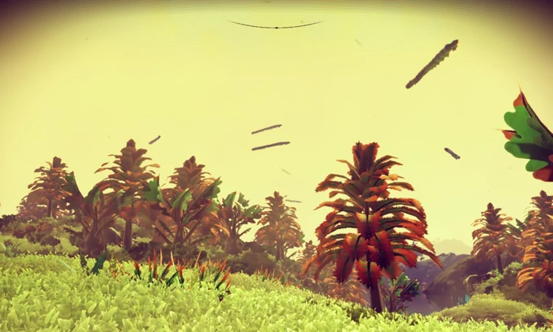
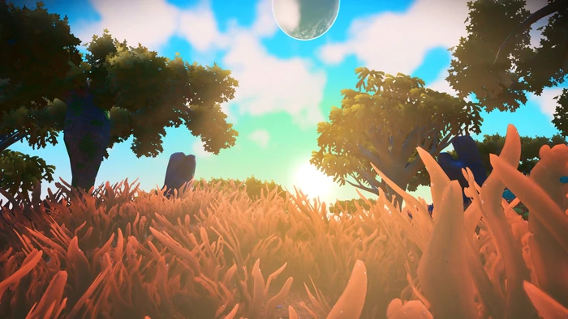
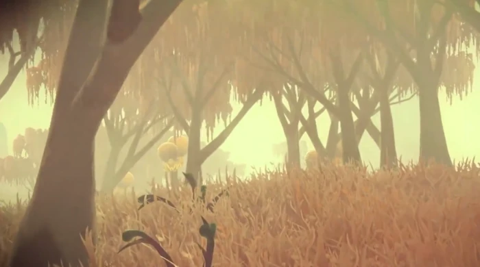
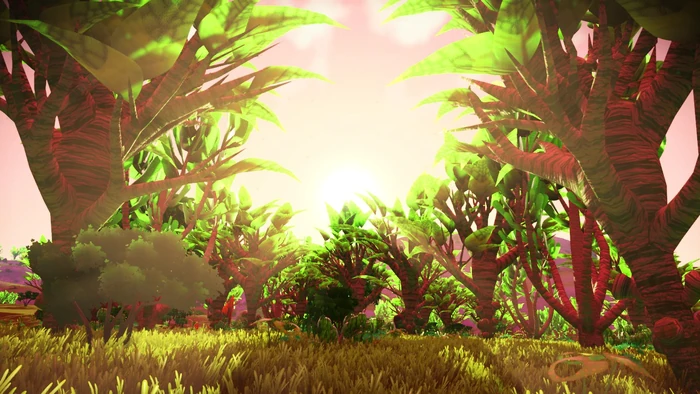

.jpg)
JunglemoonPrix à l'unité : € Quantité : Le climat de Junglemoon est froid, il fait -18,9°C en moyenne, avec des pluies permanentes ; la température chute à -40°C environ la nuit. Il y a également des tempêtes très violentes pendant lesquelles la température à -88,2°C rendant la survie très difficile, environ la moitié du temps, faisant de ce monde un endroit assez hostile, mais le spectacle en vaut la peine. Le paysage se compose de plaines, de forêts et de hautes collines, avec des rivières et des océans. Le sol est couvert d'une herbe exotique. Il y a beaucoup de platine et de cuivre, des ressources très utiles qui pourront être utilisées pour le matériel éléctronique sur place. Le ciel jaune et nuageux est dominé par d'étranges créatures volantes, omniprésentes sur cette planète. Cette planète servira essentiellement à la production, même si la vie y est envisageable. |
Blue World Prix à l'unité : € Quantité : Blue World est probablement notre meilleur espoir en termes de colonisation : elle orbite à la même distance que la terre de son étoile (à savoir Kiolo-Paos 10, étoile semblable au soleil), jouit d’une température moyenne de 14°C et d’un climat extrêmement calme.
Cette planète possède un ciel rose, des plaines couvertes d'herbe bleue et des arbres rouges. L'ambiance est très calme et les tempêtes se produisent rarement.
La faune de cette planète est assez réduite, on y croise essentiellement des petits mammifères de temps en temps, tandis que la flore est très abondante, il y a des forêts d'arbres rouges sur une grande partie de la surface de la planète. Le relief de cette planète est assez faible, seulement quelques collines plutôt lisses.
|
ExbolisPrix à l'unité : € Quantité : Située dans le système d’Oshimaka, cette planète possède une lune : Venom Prime.
Elle jouit d’un climat tempéré et d’une température moyenne de 13°C ; et est à l’instar de Blue World l’un de nos meilleurs espoirs en termes d’habitabilité.
Cette planète est essentiellement océanique, avec des îles recouvertes d'herbe rouge et d'arbres verts.
La faune est relativement rare mais la flore est très abondante sur les îles. La densité de la végétation est exceptionnelle pour une planète océanique,
les arbres semblent produire une résine dont certaines espèces de mammifères se nourrissent, et l’herbe, selon les analyses, semble être idéale pour la production de bio-carburants.
|
Ichunah Uver Prix à l'unité : € Quantité : Cette planète orbitant autour de Carmola Prime est assez loin de son soleil, même si elle reste dans la zone habitable ; ce qui lui confère un climat ensoleillé avec une température moyenne de 7°C. Ce monde est couvert d’herbes étranges rouges et noires, elle possède un ciel jaune et des reliefs assez importants par endroit, avec des collines, elle abrite des océans très colorés jouissant d’une flore sur-développée et d’une population de plancton très importante, avec d'étranges formations naturelles et des créatures dangereuses. Il y a des forêts assez riches et différentes espèces de plantes et champignons, mais avec très peu de ressources naturelles (le fer y est aussi rare que l’argent sur terre). |
Oria 5 Prix à l'unité : € Quantité : Cette planète orbitant autour de Gordialov 7 est caractérisée par une température moyenne de 32°C, due à un effet de serre important et un volcanisme actif.
La planète est composée de grandes forêts d'arbres rouges, traversée par des rivières et parsemée de prairies occupées par de grands animaux semblables aux dinosaures, mais aussi habitée par les mammifères qui se nourrissent de l'herbe rouge de la planète.
Une activité sismique intense a aussi été détectée, avec des séismes de magnitude 5.5 réguliuers, et dépassant probablement 9.0 lors des éruptions volcaniques. Ce monde est régulé par cette intense activité, et permet la remontée de minerais inconnus, mais aussi d'or et autre métaux précieux.
|
Venom Prime Prix à l'unité : € Quantité : La lune de la planète Exbolis est un endroit assez paisible, avec un climat tempéré et une température moyenne de 9°C. Il s'agit d'une planète très riche en faune et en flore. Une grande partie de la surface est couverte d'arbres, dont une espèce notable est Hartum Geusitae, un arbre aux feuilles de couleurs vives (bleues et vertes). La faune est constituée de petite mammifères et d'une grande espèce de blob sauteur. Il y a aussi par endroit un type écosystème ressemblant à une gigantesque grotte de stalactites habitée par des sortes de chauve-souris, mais bien plus dangereux car il y abrite une espèce nommée Reaper Leviathan (espèce semblable à un crocodile des cavernes). |
KushimashoPrix à l'unité : € Quantité : Orbitant autour de Fegrak Prime, cette planète possède une température moyenne de 34°C et un climat brumeux. L'environnement de Kushimasho est très humide, on peut y voir de la végétation très abondante et une faune relativement développée, il y a beaucoup de pluie, ce qui s'explique par la proximité de cette planète de son étoile. Principalement composée de forêts de petits arbres et de marais, l’eau y est présente sous formes de petites marres à la surface (l’essentiel de l’eau étant dans les nappes phréatiques). Les vents y restent néanmoins assez forts (60km/h en moyenne, chiffre qui monte à 110km/h lors des tempêtes occasionnelles). Il y a également des grottes, organisées en gigantesques réseaux (on soupçonne même que toutes les grottes soient inter-connectées), où la température tombe à 22°C, avec des sources d’eau naturelles. |
Imsby 15 Prix à l'unité : € Quantité : Cette planète orbite autour de Carmola Prime, étoile de type naine rouge relativemet éloignée du trou de vers ;
et est caractérisée par un climat particulièrement sec, avec très peu d’eau liquide à la surface (l’essentiel de l’eau se trouvant dans les nappes phréatiques ou aux pôles)
, et une température moyenne de 29°C. Elle abrite de nombreuses espèces de cactus fleuris, sous un ciel rosé
qui donne un éclairage relativement sombre caractéristique à cette planète.
Elle possède un relief de collines avec de nombreuses pentes, pics et vallées.
Des anomalies géométriques en forme de pic sont présentes à travers la planète.
|
Stburg 19 Prix à l'unité : € Quantité : Cette planète, orbitant autour de l’étoile baptisée Ermster 8, est la planète la plus proche du trou de vers. Elle est plutôt proche de son étoile, ce qui la rend assez chaude (27°C de moyenne) et jouit de la présence d’eau sous forme de lacs et rivières. La planète possède de l'herbe orange, des arbres rouges et un ciel jaune, la lumière est relativement intense et vive. Elle possède un relief plutôt doux. Le climat est calme dans l'ensemble, des tempêtes de produisent de temps en temps. On y croise une faune assez diversifiée, preuve que le climat tropical n’a pas été un frein au développement de la vie sur cette planète. On y trouve des dépôts étranges à sa surface qui possèdent une couleur rosée assez insolite, qui semblent s’apparenter à du cuivre. |
Dikasjout-Duhu Aoss Prix à l'unité : € Quantité : Cette planète orbitant autour de Fegrak Prime est caractérisée par une météo sèche, les pluies sont rares et l’eau est présente sous forme de glace.
En effet, la température moyenne de -2°C est un véritable frein au développement de la faune,
quasiment inexistante sur la planète. Cependant, il s'agit d'une planète très riche en flore,
les plaines sont couvertes d'herbe bleue et on y trouve des forêts locales d'arbres aux feuilles vertes ou jaunâtres.
La majorité de la planète est cependant constituée de montagnes rocheuses, composée de nombreux glaciers.
|
Eliend 3 Prix à l'unité : € Quantité : C'est un monde tropical pluvieux, chaud et humide, peuplé d'une flore constituée d'arbres généralement d'une couleur bleu, tout comme l'herbe. La faune contient essentiellement des petites espèces de mammifères, mais il n'est pas rare de croiser quelques grands spécimens. Orbitant autour de l’étoile Ermster 8, elle est légèrement trop près de son étoile, ce qui cause des tempêtes accompagnées de pluies extrêmement chaudes, parfois plus de 160°C, et d'une visibilité extrêmement réduite. Quand les tempêtes cessent, la température est généralement située entre 45 et 50°C le jour, et environ 26°C la nuit, mais ces moments calmes ne durent jamais longtemps ici, les tempêtes font rage presque en permanence. L’intérêt que nous allons porter à cette étoile est pour ses ressources quasi illimitées en lithium, fer, titane et cuivre, ainsi que, selon les analyses géologiques, de gigantesques gisements d’Uranium et de Thorium. |
RybunoyerraPrix à l'unité : € Quantité : Rybunoyerra est une lune d’une géante gazeuse du système Orbaxis, et jouit d’un climat pluvieux accompagné d’une température moyenne de 24°C. Cette planète abrite des plaines et des forêts vertes relativement denses. L’eau y est présente sous forme de lacs et rivières, relativement abondants sur la planète. La faune et la flore sont relativement abondantes : il y a un grand nombre d'espèces, notamment un étrange petit animal volant en forme de spore : Uivacumarae Cecam. Les arbres sont fluorescents la nuit.
|
| Planète | Nombre de titres | Prix unitaire | Prix |
|---|---|---|---|
| Junglemoon | 0 | € | € |
| Blue World | 0 | € | € |
| Exbolis | 0 | € | € |
| Ichunah Uver | 0 | € | € |
| Oria 5 | 0 | € | € |
| Venom Prime | 0 | € | € |
| Kushimasho | 0 | € | € |
| Imsby 15 | 0 | € | € |
| Stburg 19 | 0 | € | € |
| Dikasjout-Duhu Aoss | 0 | € | € |
| Eliend 3 | 0 | € | € |
| Rybunoyerra | 0 | € | € |